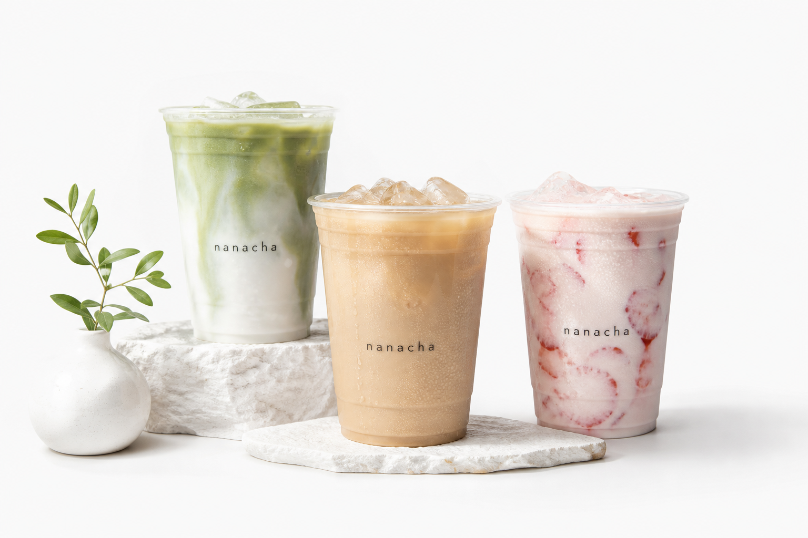

tapioca & more...
tapioca & more...


tapioca milk
黒糖タピオカミルク
国産新鮮牛乳と黒糖タピオカの相性を楽しめる、不動の人気 no.1。
tapioca & more...
福岡市中央区清川のティースタンド。黒糖タピオカミルク、フルーツティー、八女抹茶ラテ、スムージーを、テイクアウトや受け取り予約で気軽に楽しめます。

real menu picks
tapioca milk
国産新鮮牛乳と黒糖タピオカの相性を楽しめる、不動の人気 no.1。

tapioca frappe
砕いたオレオともっちりタピオカを合わせた人気フラッペ。

tapioca tea
福岡県八女産抹茶を使った、抹茶感のあるミルクティー。

smoothie
マンゴーをたっぷり使用し、ヨーグルトと合わせた濃厚スムージー。
how to order
黒糖タピオカミルク、フラッペ、タピオカティー、スムージーなど、気分に合わせて選べます。
S 360ml、R 500ml、L 700ml から選択。しっかり楽しみたい日はラージがおすすめです。
甘さはふつう、多め、少なめ、ゼロ。氷の量も好みに合わせて調整できます。
タピオカ追加、チーズフォーム、オレオ、ホイップなどで、自分好みの一杯にできます。
drink guide
黒糖タピオカミルク。国産新鮮牛乳と黒糖タピオカの定番人気です。
ジャスミンタピオカティーやグリーンタピオカティー。茶葉の香りをすっきり楽しめます。
オレオ、黒ごま、抹茶、チョコ系のフラッペやミルクがおすすめです。
フルーツティー、蜂蜜柚子茶、マンゴーヨーグルトスムージーでさっぱり。
seasonal picks
春夏はフルーツティーやスムージー、秋冬は黒糖ミルクや抹茶ラテなど、季節に合わせて飲みたい一杯をおすすめしています。
マンゴーとヨーグルトの濃厚な組み合わせ。暑い日にもデザートにも。
蜂蜜柚子の香りとジャスミン茶のすっきり感を楽しめる一杯。
福岡県八女産抹茶 100% 使用。抹茶の香りと黒糖タピオカが好相性です。
our tea stand
アッサム紅茶、ジャスミン茶、ルイボス茶、国産緑茶など、香りを活かしたティーメニューを揃えています。
ミルク、ラテ、ティー、コーヒーまで、黒糖タピオカの食感を楽しめるメニューを用意しています。
八女抹茶を使ったラテやフラッペなど、福岡で楽しみたい味わいも大切にしています。
shop map
清川通りから少し入った路面店です。テイクアウトは店頭右側の pickup desk で受け取れます。
faq
対象メニューはタピオカ抜きにできます。スムージーやスペシャルなど、もともとタピオカが入っていない商品もあります。
甘さはゼロ、少なめ、ふつう、多めから選べます。氷はふつう、少なめ、氷抜きに対応しています。
はい。福岡清川店ではテイクアウトでの受け取りに対応しています。受け取り予約も利用できます。
デカフェ変更に対応できるメニューがあります。気になる方は注文時にご確認ください。
牛乳、豆乳、ナッツ、ごま、チョコレートなどを使う商品があります。アレルギーをお持ちの方は注文前にスタッフへご相談ください。
福岡市中央区清川2-9-6です。渡辺通駅・西鉄平尾駅エリアからアクセスしやすい路面店です。
pickup desk
注文内容を確認して、Squareの決済画面へ進みます。